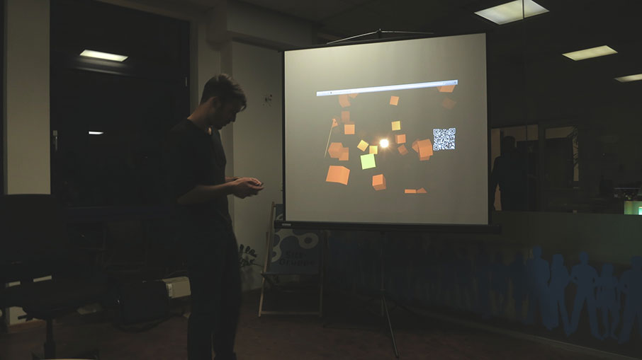
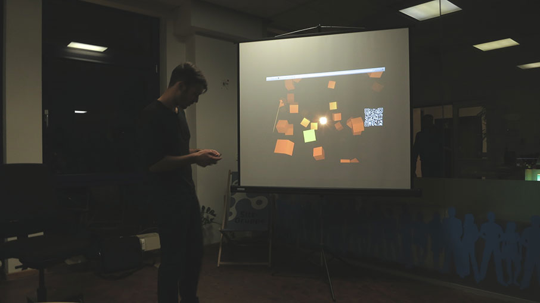

Jan Kus
Jan KusCo-Founder of http://railslove.com and http://coworkingcologne.de. I love building web applications! Nuff said". He's talking about how to transform a MacBook Pro into a KITT. A live hacking session using anykey0x.
What: Meetup, Workshop, Techtalks
Date: June 21st
Time: 3 PM
Where: STARTPLATZ
Entrance: free
Hackers4!=Hackers is a completely new format developed together with STARTPLATZ. The goal is to show Non-Hackers interessted in technology and web this world. It's very common to Railsgirls. Hackers for Non-Hackers - nothing more to say.
What: Meetup, Techtalks
Date: June 21st
Time: 7 PM
Where: STARTPLATZ
Entrance: free
DevHouseFriday is an event intended for creative and curious people interested in technology inspired by SuperHappyDevHouse. Once a month (on fridays) we talk about technology and share our knowledge while meeting new people and learning stuff we are all interested in.
Our meetups are orginized every two months visiting different companies (like: Kalaydo, wer kennt wen, Adcloud, DuMont Venture, meeting different people, speaking different languages.
This event's place will be announced ASAP. The entrance is free and for more information visit: http://devhousefriday.org/networks/events/show_event.78620
Jan Kus
Co-Founder of http://railslove.com and http://coworkingcologne.de. I love building web applications! Nuff said". He's talking about how to transform a MacBook Pro into a KITT. A live hacking session using anykey0x.
if you think you have something to say just ping us on twitter or write an email.
 
